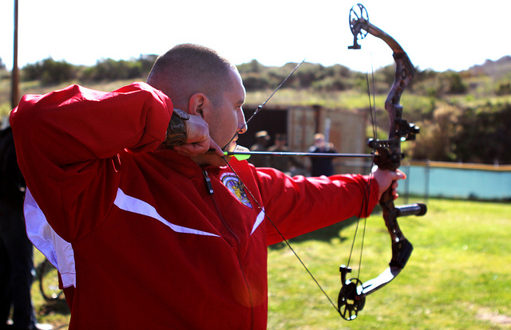
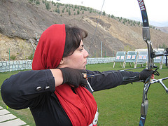

OUR SERVICES
--CLASSES OFFERED--
A101 BASIC ARCHERY

Description: A101 is a basic archery course that focuses on beginning archery safety, skills, and drills. Participants learn about archery form, range rules and etiquette. Form training and fun games are introduced in this class. Equipment will be provided with exception of safety kit. Cost: $120/month Schedule: Mondays and Wednesdays, 4-5pm Prerequisite: Interest in learning about the sport of archery. Minimum age 8 years old or 7 w/ pre-evaluation.
A102 INTERMEDIATE ARCHERY

Description: A102 is an intermediate archery course that focuses on intermediate archery safety, form, and introduces new equipment styles of shooting Recurve and Compound bows. Fun games and form reinforcement techniques are emphasized in this class. Equipment will be provided with exception of safety kit. Cost: $120/month Schedule: Tuesdays and Thursdays, 4-5pm Prerequisite:A101 or recommendation from private lesson instructor. Minimum age 7 years old.
A103 ADVANCED ARCHERY
Description: After taking the A101, A102 classes, students are eligible to participate in the A103 class. This class focuses on a continued education towards tournament styles of shooting used by many archery tournament associations from around the world. Along with the tournament lesson, participants receive continued knowledge around their shooting form and advice on personal equipment selections.Equipment will be provided with exception of safety kit. Cost: $120/month Schedule: Tuesdays and Thursdays, 5-6pm Prerequisite: A101/A102 or equivalent. Minimum age 7 years old.
--PRIVATE LESSONS--

Single Lesson
Description: 1 hour of expert guidance by a USA "Archery-Certified" Coach
Price: $50

Three-Lesson Package
Description: 3 lessons, 1 hour each of expert guidance by a USA "Archery-Certified" Coach
Price: $140
Ten-Lesson Package
Description: 10 lessons, 1 hour each of expert guidance by a USA "Archery-Certified" Coach
Price: $380
INSTRUCTORS:

Derek Jenkins:
Derek is a Washington native and an experienced outdoorsman with many years hunting, fishing, skiing, canoeing, archery, shooting and minimalistic camping. His skillful mastery of bushcraft and wilderness survival knowledge helps define his character. He enjoys handcrafting his own long bows, flint knapped primitive arrows and making custom leather products.
Amy Smith:
Amy truly has a passion for archery. She comes from a long line of hunters, fisherman, and trappers of Canada. Amy places a strong emphasis on safety and is enthusiastic about teaching. Amy also loves fitness, and has been a YMCA group exercise and personal trainer for over 18 years.
Nathan Lee:
Nathan is an USA Archery Certified Level 3 NTS – Coach and has been teaching archery since 2009. He has been interested in Archery since he nocked his first arrow while a Boy Scout at Scout camp. Nathan has many years of experience teaching people of all ages, experience gained as a Martial Arts Instructor and Studio Manager.

Doona Bae:
Doona is a passionate bow hunter and avid target archer now for many years. She is a level two NAA Instructor. Doona has competed in both State and National Indoor and Outdoor level Archery Tournaments and IBO/3D Tournaments. She enjoys working with all levels of archers.